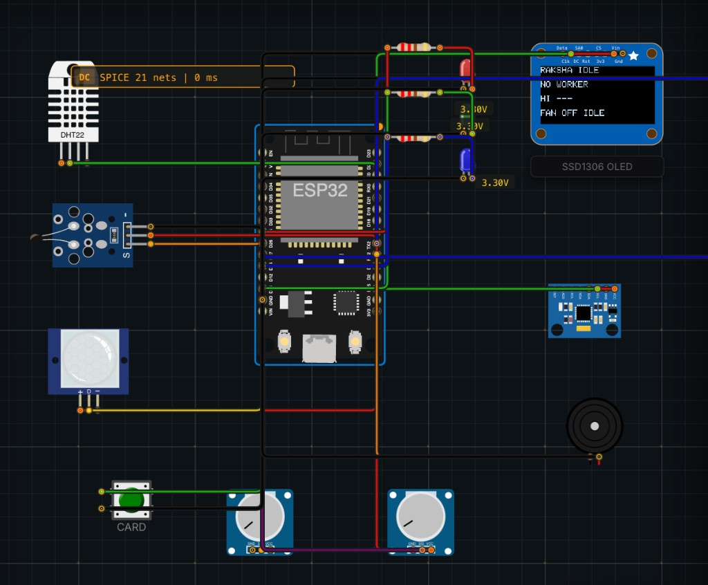
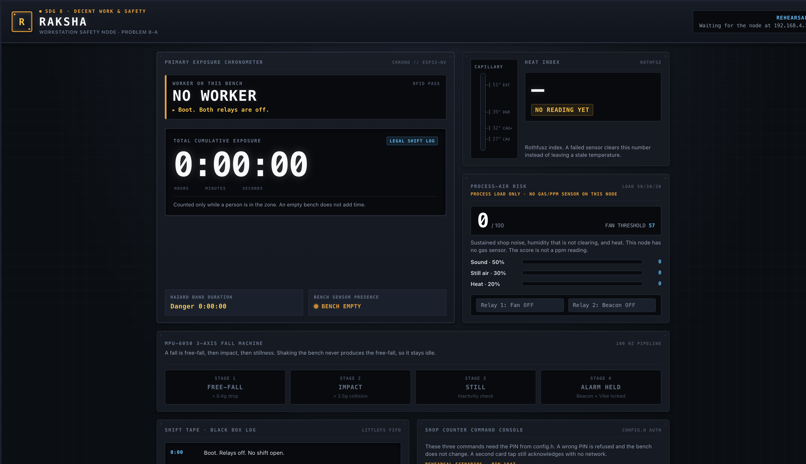
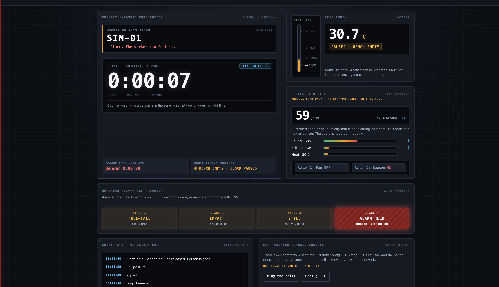

SDG 8 · Decent Work and Economic Growth · Problem 8-A
Heat and air-safety monitor for informal workers.
A bench node for kilns, tailoring units, welding shops, and small construction sites.
Informal and small-workshop workers spend full shifts in heat, dust, and fumes. There is no instrument on the bench, so a dangerous hour is noticed only after someone is already unwell. The employer has no record of which worker was present, for how long, and in what conditions.
A useful answer has to be affordable, has to warn the worker without a phone, and has to keep a record that an empty room cannot fake.
RAKSHA sits on the bench. A known RFID card opens the shift. While a person is in front of the sensors, the node computes a heat index and a process-risk score, and it watches the accelerometer for a fall. The OLED, an RGB LED, and a vibration motor tell the worker. A fan relay and a beacon relay act on the room. A CSV file on the ESP32 is the exposure record. A phone on the node’s own access point shows the same shift.
The kit has no gas sensor. The air result is a process-risk score from sustained noise, humidity that is not clearing, and heat. It is not a ppm reading.
| Layer | Choice |
|---|---|
| Controller | ESP32 DevKit V1, Arduino C++ |
| Climate | DHT22, NTC 10 kΩ β 3950, barometer temperature as a third vote |
| Motion | MPU6050, ±2 g, +Z up, raw read every 10 ms |
| Presence | PIR through a 74HC14, IR proximity |
| Process air | KY-037 analog envelope and a threshold potentiometer |
| Identity | RC522 RFID |
| Worker interface | SSD1306 OLED, RGB LED, vibration motor via 2N2222A and 1N4007 |
| Loads | 2-channel relay, fan and beacon, active-low |
| Power | 12 V to an HW-411 buck, measured at 5.0 V. 74HC14 at 3.3 V |
| Record | LittleFS, /shift.csv |
| Network | STA for 10 s, then access point RAKSHA at 192.168.4.1 |
| Dashboard | One HTML file, inline CSS and script, no external assets |
| Simulation | Logicraft Studios Velxio editor, simulation/raksha-logicraft.zip |
Not fitted: 4×4 keypad, I2C LCD, spare 1-channel relay, 2N3906, IRF9540.
POWER → BOOT → SENSE → ESTIMATE → DECIDE → ACT → RECORD → SERVE
The 10 ms path reads the MPU6050 and steps the fall machine. It does not read the DHT22, write flash, or serve HTTP. Climate samples run every 2 seconds.
| Stage | When | Result |
|---|---|---|
| Power | Once | 12 V bucked to 5.0 V for VIN, relays, and the motor |
| Boot | Every reset | Relays off first, then self-test. Fault holds the relays off |
| Sense | 10 ms and 2 s | IMU fast. Climate, sound, presence, and RFID on their own clocks |
| Estimate | Same clocks | Heat index, temperature vote, risk score, presence, magnitude, tilt |
| Decide | Same clocks | Shift, band, air alert, fall state, fault |
| Act | On change | OLED, RGB, vibration, fan, beacon |
| Record | 15 s and edges | One CSV row |
| Serve | On request | Dashboard. Three commands need a PIN |
| Heat index | Band | Action |
|---|---|---|
| below 27 °C | none | Green |
| 27–32 °C | caution | Amber, one vibration pulse on entry, exposure counts |
| 32–39 °C | extreme caution | Amber, pulse on entry, exposure counts |
| 39–51 °C | danger | Red, pulsing vibration, fan on, danger seconds count |
| above 51 °C | extreme | Red, pulsing vibration, fan on, danger seconds count |
The fan also closes when process risk crosses the threshold while a person is present and the heat reading is valid, even if the band is still caution.
stagnation = clamp((RH − 65) / 20, 0, 1) heat_couple = clamp((heat_index − 27) / 12, 0, 1) if heat is valid, else 0 score = 100 × (0.50 × sound + 0.30 × stagnation + 0.20 × heat) threshold = 30 + (pot / 4095) × 60, clamped to 30–90
Sound is a 10-second envelope. A clap dies. The score is not a gas concentration.
Free-fall is below 0.4 g for 80 ms. Impact is above 2.5 g within 500 ms. Still is a tilt past 60° while the magnitude is near 1 g, held with the PIR quiet for 2 s. The alarm latches until the same card, or a fault.

Open logicraftstudios.tech/editor, cancel a new-project panel if it is showing, and open simulation/raksha-logicraft.zip. Run the sketch. Type RUN in the serial monitor.
Stand-ins on the canvas: the CARD button is the RFID tap, the left potentiometer is the KY-037, the buzzer is the vibration motor. There is no barometer on the canvas, so the heat vote is DHT22 against the NTC.
The page is one instrument for one bench. The largest number is exposure time, and it advances only while someone is in the zone.


Five panels: the exposure chronometer, the heat capillary, the process-risk bars, the four-stage fall machine, and the shift tape with the PIN counter. Acknowledge, fan, and threshold each post a PIN. A wrong PIN is refused and nothing changes. A DHT fault clears the temperature and holds both relays off.
On load the page calls GET /api/state. If the node answers, it polls every 2 seconds. If not, Play the shift runs the rehearsal. The rehearsal PIN is 1947. On the node, the PIN is the one in config.h, and the page is served at http://192.168.4.1/.
| Call | Needs a PIN | Effect |
|---|---|---|
| GET /api/state | No | Current shift, heat, risk, fall, relays |
| POST /api/ack | Yes | Clears a held fall |
| POST /api/fan | Yes | Fan on or off. Refused during a fault |
| POST /api/threshold | Yes | Threshold, clamped to 30–90 |
One RUN on the simulator. Threshold held at 57.
| Step | Observed |
|---|---|
| Boot | Relays off. OLED up. MPU up. No worker |
| 30 °C / 55% / sound 0.10 / present | Shift SIM-01. Heat index 31.9 °C. CAUTION. Risk 13.1. Fan off |
| Clap, sound 0.12 | Heat index 30.7 °C. Risk 19.6. Fan stays off |
| Sustained noise, sound 0.90 | Risk 58.6. Fan on. Band still CAUTION |
| Shake | Fall stays IDLE |
| Drop | FREEFALL, IMPACT, CONFIRM, ALARM. Beacon on. Fan off |
| Second card | ACK. Fall idle. Beacon off |
| DHT removed | FAULT DHT. Relays off. Heat cleared |
| Hidden case | Expected |
|---|---|
| DHT unplugged | Fault, relays off, no stale temperature |
| Shake for about 10 s | Fall stays idle |
| One clap, then sustained noise, hand on PIR | Clap ignored. Sustained noise closes the fan |
| Person leaves | Exposure pauses. It is not wiped |
| Reset while the fan is on | Relay off at boot |
| Unknown card | Shift does not open |
| Wrong PIN | HTTP 401. Nothing changes |
| No router | OLED, vibration, and the CSV continue. The page is on the access point |
README.md GitHub entry dashboard/index.html the instrument page docs/REPORT.md this report, in Markdown docs/pipeline.md formulas, pins, config.h contract docs/runbook.md build order and demo simulation/ canvas, sketch, and the zip to open